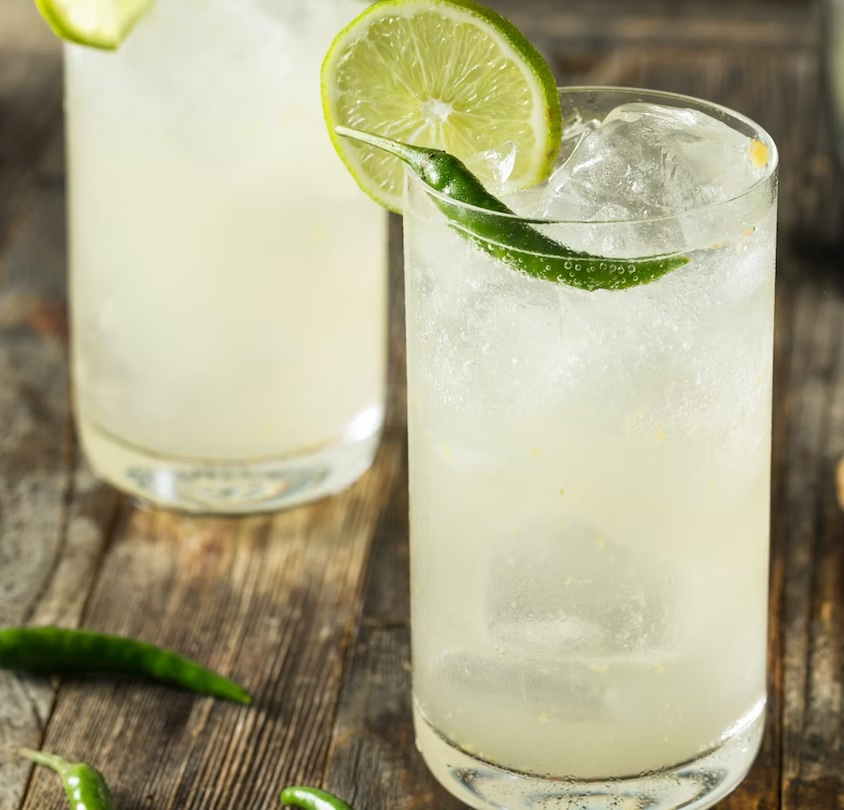

The national cocktail of Thailand was created in the beginning of 2009 and was used by travel agencies to attract tourist to the country. It is known by others as "Thailand in a glass" and is very popular nationally. It was created by bartender Surasakdi Pantaisong who was the winner of the 2008 National Bartender Contest for his creation.
Add chilli pepper, ginger, kaffir lime leaf and lemon grass in a shaker and crush with a rolling pin. Add sugar syrup, lime juice and vodka, shake well. Add ice to your chosen glass and strain the mixture over the top. Top up with soda water, garnish with lime wedges.